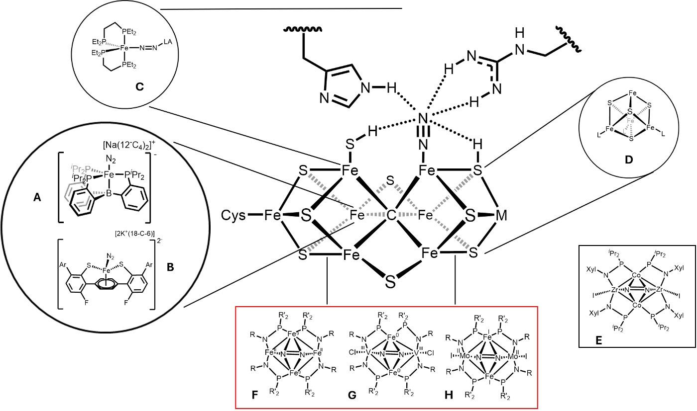

Nitrogen is essential to all life forms and constitutes ~78% of the air we breathe. Many research efforts have been dedicated to activating N2, both for NH3 production and the synthesis of value-added compounds forming C-N, P-N and B-N bonds. Some of the challenges for such activation is the inertness of the N2 molecule and the formidable strength of the triple bond. The Haber-Bosch process, the main industrial procedure to make ammonia, converts N2 from the atmosphere into NH3 by a reaction with H2 using a Fe metal catalyst. Although this reaction is thermodynamically favorable, the kinetics are slow. At elevated temperatures, in which the catalyst functions, the reaction reaches equilibrium. At this point, pressure is required to push the equilibrium towards products. The amount of energy required to perform this reaction, and the resulting production of greenhouse gases fuels the search for better, eco-friendly methods for nitrogen fixation. In nature, lightning transforms N2 to nitrous oxides (NOx), but to a larger extent, nitrogenases can reduce N2 to NH3 catalytically. Although there are many unknown properties and characteristics of these enzymes, the activity and selectivity towards nitrogen fixation has drawn a lot of attention in the field. Today we know of three types of nitrogenase enzymes: molybdenum (Mo)-nitrogenase, vanadium (V)-nitrogenase and iron-only (Fe)-nitrogenase, all differing in the metal composition of their active site and in the efficiency of the nitrogen transformation. (Figure 1)

The efficiency and activity of nitrogenase enzymes towards nitrogen reduction varies based on the metal combination in the active site. The ratio of H2 evolution to N2 reduction is often used as a measurement of efficiency for nitrogenase enzymes. With values of 2, 5 and 7 for (Mo)-, (V)- and Fe-only, these isoforms follow the series Mo > V > Fe. These values were obtained from experiments conducted under 1 atm of N2 and high electron flux for all three enzymes.27 Similarly, the specific activity towards N2 reduction of these enzymes follows the same series with 83.5, 24.2 and 8.4 s-1atm-1 for the reductive elimination step of the mechanism for Mo-, V- and Fe-only nitrogenase enzymes. This suggests that there is a difference embedded on each of these enzymes caused by the metals present in the active site. Hypothesis: Bis(phosphinoamide) complexes can be used to construct tetrametallic Fe-Fe, V-Fe, and Mo-Fe clusters that activate N2 following the same series of efficiency and activity as their enzyme homolog. The efficiency will be best with the Mo2Fe2 tetrametallic complex as both Mo and Fe could engage in the activation of the nitrogen molecule. The V2Fe2 tetrametallic complex will be second best as the polarized V-Fe bond will help the flow of electron density into the substrate by push of the Fe centers and pull of the V centers. Lastly, the Fe4 cluster will be the least active as the degree of polarization in the metal-metal bond will be less compared to the V/Fe complex.